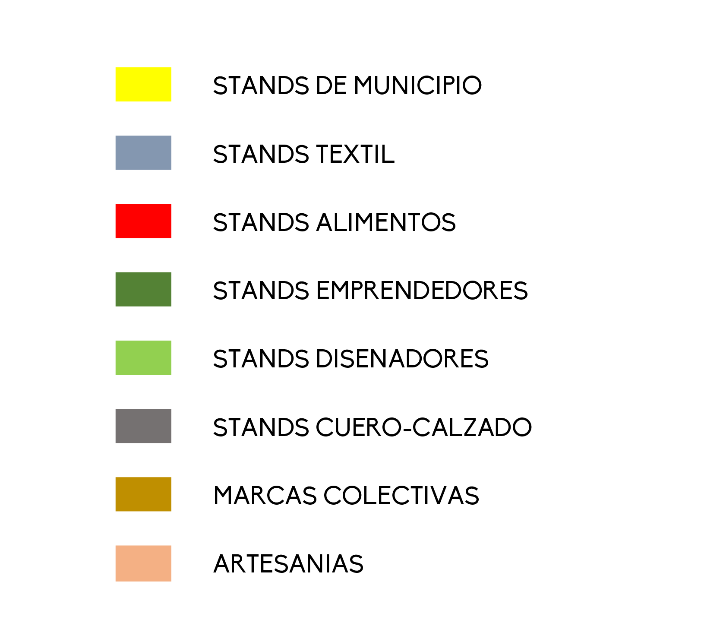

<div class="navbar fondoazul">
    <div class="navbar-inner">
      <div class="left">
          <a href="#" class="back link">
              <i class="icon icon-back color-white"></i>
              <span class="letraazul">Ba</span>
          </a>
      </div>
        <div class="center sliding">Mapa</div>
        <div class="right">
            <a href="#" class="link icon-only open-panel"><i class="icon icon-bars color-white"></i></a>
        </div>
    </div>
</div>
<div class="pages">
  <div data-page="mapa" class="page no-toolbar">
    <div class="page-content fondoblanco" style="position: relative;">
      <div style="margin-top:30px;"></div>
      <div class="row">
        <div class="col-10"></div>
        <div class="col-40"><a href="#tab1" class="tab-link botones activo der" id="baja">PLANTA BAJA</a></div>
        <div class="col-40"><a href="#tab2" class="tab-link botones izq" id="alta">PLANTA ALTA</a></div>
        <div class="col-10"></div>
      </div>
      <div class="content-block">
        <div class="tabs">
          <div id="tab1" class="tab active">
            <div class="content-block">
              <iframe id="myframe" src="planta_baja.html" style="width:80%; height: 70%;position: absolute;"></iframe>
            </div>
          </div>
          <div id="tab2" class="tab">
            <div class="content-block">
              <iframe id="myframe2" src="planta_alta.html" style="width:80%; height: 70%;position: absolute;"></iframe>
            </div>
          </div>
        </div>
      </div>
      <div style="margin-top:100%"></div>
      <div class="content-block" style="position: absolute">
        
      </div>
    </div>
  </div>
</div>
